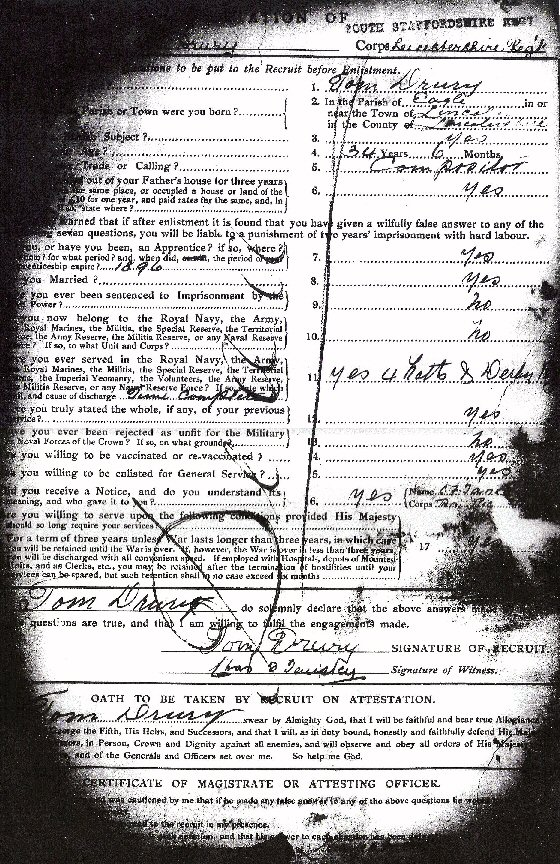
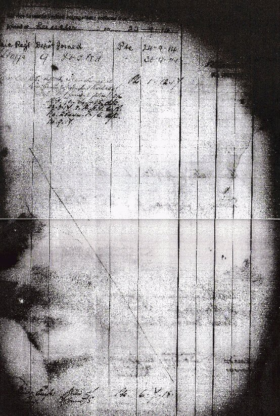
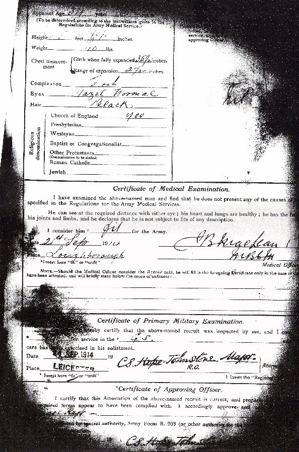

Army Form B 111 — Short Service (For the Duration of the War). Attestation of Tom Drury.
Questions to be put to the recruit before enlistment:
1. What is your Name?
1. Tom Drury
2. In which Parish or Town were you born?
2. In the Parish of Eagle in or near the town of Lincoln in the county of Lincolnshire.
3. Are you a British Subject?
3. Yes
4. What is your Age?
4. 34 years 6 months
5. What is your Trade or Calling?
5. Compositor
6. Have you lived out of your Fathers house for three years, in the same place, or occupied a house or tenement at 10s. rent?
6. Yes
7. Are you or have you been an Apprentice?
7. Yes
8. Are you Married?
8. Yes
9. Have you ever been sentenced to Imprisonment by the civil power?
9. No
10. Do you now belong to the Royal Navy, the Army, the Royal Marines, the Militia, the Special Reserve, or any Naval or Military Force?
10. No
11. Have you ever served in the Royal Navy, the Army, the Royal Marines, the Militia, the Special Reserve, or any Naval or Military Force?
11. Yes — 4 Notts and Derby Regt
12. Have you truly stated the whole, if any, of your previous service?
12. Yes
13. Have you ever been rejected as unfit for Military or Naval Forces of the Crown?
13. No
14. Are you willing to be vaccinated or re-vaccinated?
14. Yes
15. Are you willing to be enlisted for General Service?
15. Yes


